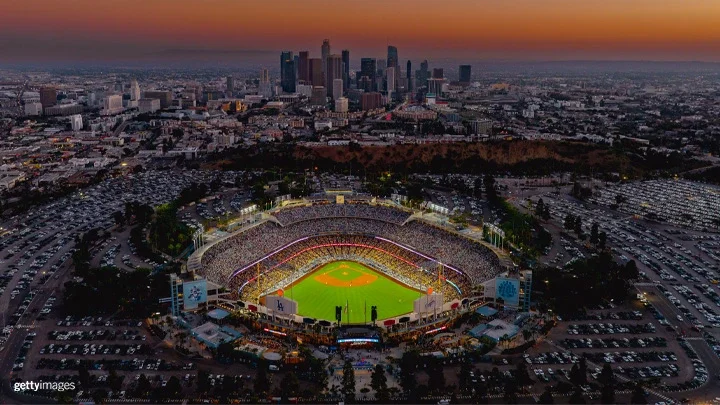
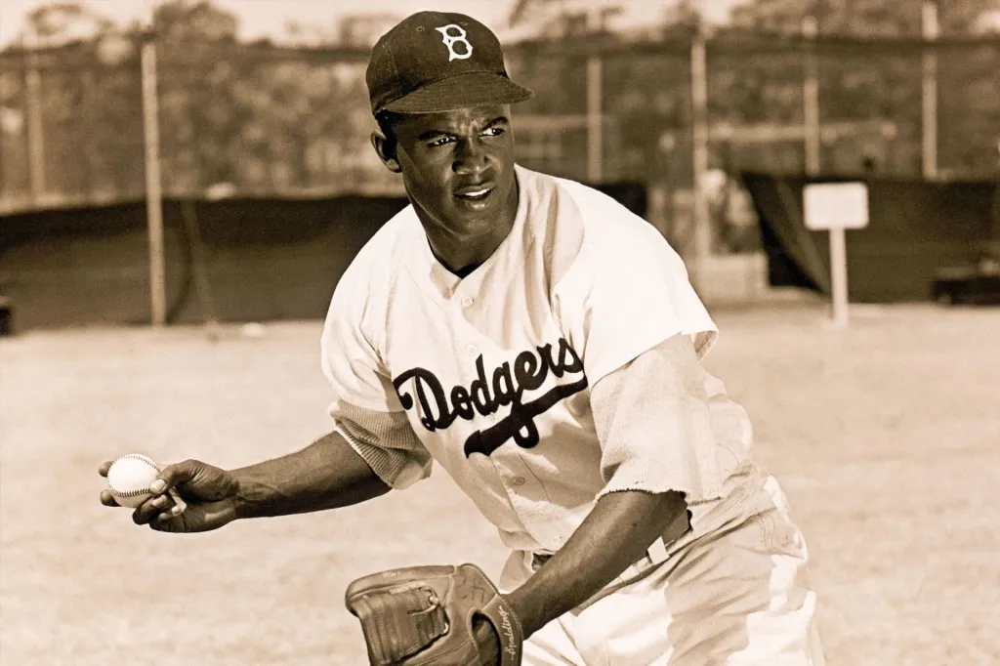

Jump to a section
A Brief History of Baseball


Baseball's origins trace back to the mid-1800s in the United States. In the late 19th century it had become America's most popular sport, earning the nickname "America's Pastime." The first professional league, the National League, was founded in 1876, followed by the American League in 1901.
The sport has since grown into a global phenomenon, with Major League Baseball drawing tens of millions of fans each season from Japan, South Korea, Latin America, and many more.
Rules & Positions
Baseball is played between two teams of nine players over nine innings. Each inning gives both teams an unlimited amount of at-bats until they acquire three outs. Here are the key positions and what each one demands:
-
Pitcher
- Throws the ball toward home plate in attempt get batters out.
- Must master multiple pitch types (ex: fastball, curveball, slider, changeup).
- Controls the tempo and rhythm of game.
-
Catcher
- Catches the pitcher's throws and calls the game strategy.
- Defends home plate and controls base runners.
- Often considered the quarterback of the defense.
-
Infielders (1B, 2B, 3B, SS)
- Cover the bases and handle ground balls.
- Helps the catcher control base runners.
-
Outfielders (LF, CF, RF)
- Track and catches fly balls hit deep into the outfield.
- Center fielder is typically the fastest and covers the most ground.
-
Designated Hitter (DH)
- Bats in place of the pitcher.
- Typically one of the team's most powerful hitters.
- Does not play a defensive position.
Greatest Moments in Baseball
From Babe Ruth's called shot to Kirk Gibson's legendary World Series home run, baseball has produced some of the most dramatic moments in all of sports. Watch some of the greatest plays and highlights the game has ever seen:
Video: Greatest Moments in MLB History
Stats & Data
Baseball is one of the most statistically rich sports in the world. From batting averages to WAR (Wins Above Replacement), numbers tell the full story of the game. Explore the interactive visualization below:

Data visualization via Tableau Public — 2024 MLB Attendance figures.